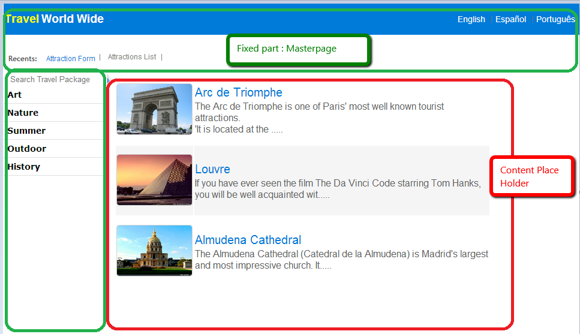

Navigating to a web page that is substantially similar to the current page should not force a refresh of the entire page in the browser, and it should update only what is actually needed. In GeneXus, the Call command and the Link Command are used for navigating between web pages. Both use Ajax, and this makes it possible to call the new page without the need to refresh all of it. The result is that elements already present on screen will not be reloaded. This is Single Page Applications - SPA. The concept of SPA is used in GeneXus web applications in the way explained below. Typically, GeneXus applications use a Master Page where the developer places components which are common to the majority of the pages in the application, such as header, menu, navigation bar, footer, etc. In those circumstances, when the user navigates between pages contained in the same Master Page, since the Master Page content does not change, it is not necessary to reload it. In the following image, the fixed parts of the page are the menu and the header, both of which are in the Master Page. The Content Place Holder of the Master Page loads the parts which really change: web pages navigated by the user.  In sum, navigating from page A to web page B that shares the same Master Page will update only the Content Placeholder without triggering a full page refresh. Besides, the following will also happen:
Note: In the case of navigating from page A to a web page B which does not share the same Master Page, there are no common elements identified from page A to page B. However, the call to page B is performed using Ajax as usual, so a full refresh will not take place either. How to enable Single Page ApplicationsYou need to configure the Web User Experience property to "Smooth". Improving user experience in Single Page ApplicationsIn both cases — either the content placeholder is loaded, or the whole page is loaded, because the pages are not contained in the same Master Page — CSS effects may be configured in the GeneXus Theme. A visual effect of Single Page Applications is the so called GeneXus Transitions, which is a kind of animation that allows us to gradually change from one status to another. ConsiderationsSee http://caniuse.com/#feat=history for details about supported browsers. In unsupported browsers — or otherwise supported browsers where the user has disabled scripting — the links work as regular links.
|
| Backlinks | |
| KB:OnlineShop (Shopping cart sample) | Transitions for Web |
| Web User Experience property |